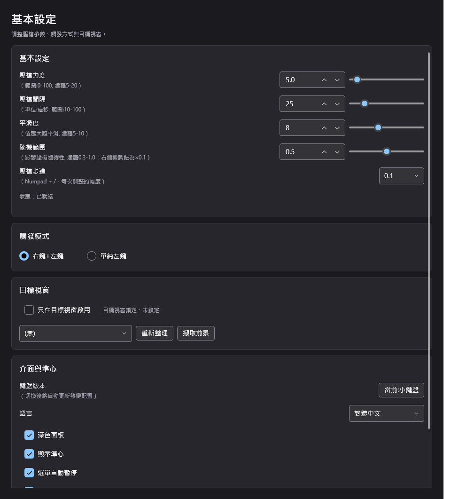

- 版本
- v1.4.0（2026-11-05）
- 安裝
- Setup.exe（Velopack 自動更新）
- 技術
- PySide6 + OpenCV
- 授權
- AGPL-3.0
自動化項目
用遊戲、任務或技術篩選下方六個專案。篩選條件會寫進網址（?game=&task=&tech=&q=），可以把連結分享給別人；從首頁的「按需求找工具」點進來也會自動套用。
篩選專案
三個下拉選單加關鍵字搜尋；按「重設」回到全部六個專案。
商業 · 試用＋購買通用 FPSC# WPF
通用壓槍腳本（SidAllFPS）
FPS 後座力補償：自訂槍械壓槍數據（正式版 9 組為站面所載，待原作確認）；v1.2.0，14 天免費試用僅限 3 組槍械預設。

-
《深空之眼》半自動腳本
公開源碼深空之眼AHK v2戰鬥半自動操作（普攻／連招；現行 v1.1.2，烤肉模式已移除）。
查看專案 -
《棕色塵埃2》音遊助手
公開源碼棕色塵埃 2AHK v2音樂節拍自動判定（色彩偵測＋多區域可調節奏與浮動 UI；現行 v1.0.2）。
查看專案 -
OCR Trigger Clicker
站外專站站外 OCRPythonNo-Code 觸發條件加點擊位置、視窗比例座標；有自己的獨立網站。（現行 v0.4.8，Setup.exe 安裝。）
查看專案（站外專站） -
《鳴潮》素材計算器
公開源碼鳴潮Web角色養成素材最佳合成路徑分析。（Web 工具，僅供學習交流。）
查看專案（GitHub）
沒有符合的專案
目前的篩選條件太窄了。試著清除關鍵字，或把遊戲／任務／技術改回「全部」，再逐一縮小範圍。
如何閱讀這份目錄
特色條目放完整說明與視覺，其餘條目只保留名稱、任務、技術與入口。篩選時不合條件的條目會直接隱藏，計數即時更新；把網址傳給別人，對方會看到相同的篩選結果。